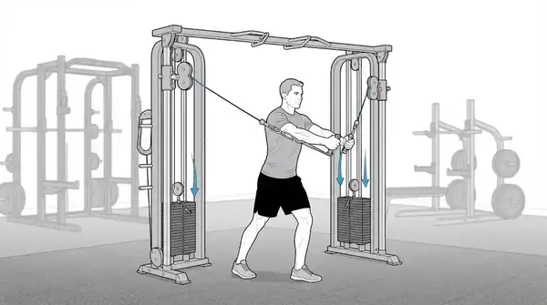

Allongé sur le banc, pieds à plat au sol, barre au-dessus de la poitrine.
1. Descendre la barre lentement jusqu'à frôler le milieu des pectoraux.
2. Pousser la barre jusqu'à avoir les bras tendus, sans verrouiller les coudes.
Variante : avec des haltères pour plus d'amplitude.
Conseil : garder le dos plaqué contre le banc et se faire assister si la charge est lourde.

En appui sur les barres parallèles, bras tendus, jambes fléchies.
1. Descendre en pliant les coudes jusqu'à ce que les bras forment un angle de 90°.
2. Remonter en poussant sur les mains jusqu'à avoir les bras tendus.
Variante : avec une machine d'assistance ou un élastique pour débuter, ou lesté pour progresser.
Conseil : buste droit pour cibler les triceps, penché en avant pour cibler les pectoraux.

Debout au centre de la machine, une poignée dans chaque main, un pied en avant.
1. Bras légèrement fléchis, ramener les mains l'une vers l'autre devant la poitrine.
2. Revenir lentement en ouvrant les bras jusqu'à sentir l'étirement des pectoraux.
Variante : poulies placées en hauteur (bas des pectoraux) ou en bas (haut des pectoraux).
Conseil : garder le même angle des coudes pendant tout le mouvement.

Debout face à la poulie haute, corde en main, coudes collés au corps.
1. Pousser la corde vers le bas jusqu'à avoir les bras tendus, en écartant les mains en fin de mouvement.
2. Remonter lentement jusqu'à ce que les avant-bras soient à 90°.
Variante : dos à la poulie, tirer la corde vers l'avant au-dessus de la tête.
Conseil : seuls les avant-bras bougent, les coudes restent fixes.